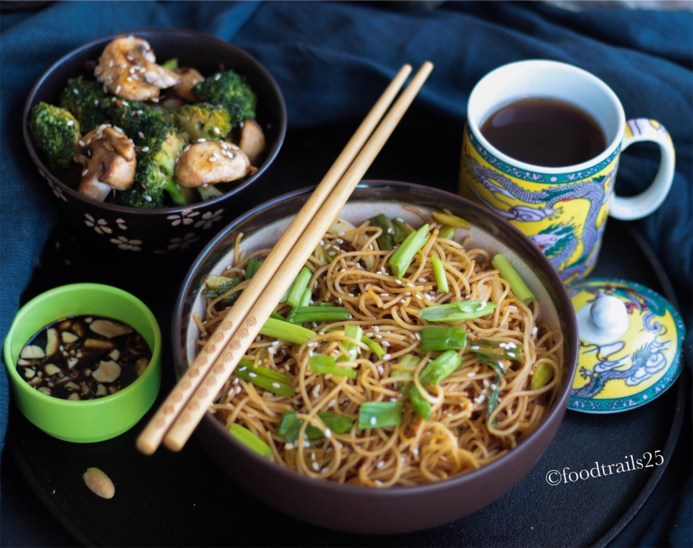

Garlic & Spring Onion Noodles
bursting with flavor!
Ingredients
-
16 ounce Noodles should be around 2 cups when boiled.. sufficient for 4
- 7-8 Garlic Cloves
- 1/2 Cup Spring Onions chopped
- 1 tbsp Sesame Seeds
- 1 tsp Freshly ground Black Pepper
- Salt to taste
Sauces:
- 2 tbsp Soy Sauce
- 1 tbsp Vinegar
- 1 tbsp Tomato Ketchup
- 1-2 tbsp Chilli Sauce/Sriracha
- 2+1 tbsp+tsp Oil(Sesame preferred)
Time
Preparation: 10 minutes | Coooking: 15 minutes | Total: 25 minutes
Instructions
-
In a big pot boil enough water to boil. When the water comes to a
roaring boil, add noodles to it and cook till al-dente.
-
Once done, add drain noodles and add 1tsp of oil, mix lightly and nicely
(can use hands) and spread on a flat plate/dish.
-
Very finely chop/mince garlic. Chop spring onions white and green part,
keep the size as per your preference.
-
In a wok or pan, once it is hot add garlic and saute till the raw smell
goes away.
- Add the white of spring onions. Saute for a few seconds.
-
Mix together all the sauces in a bowl, add to the pan and mix well. Add
noodles and stir fry on high flame.
-
Once done add spring onion, add toasted sesame seeds on noodles with
black pepper and serve garnished with spring onion greens.
- Serve with the side of your choice.
Recipe credits
Back to main page